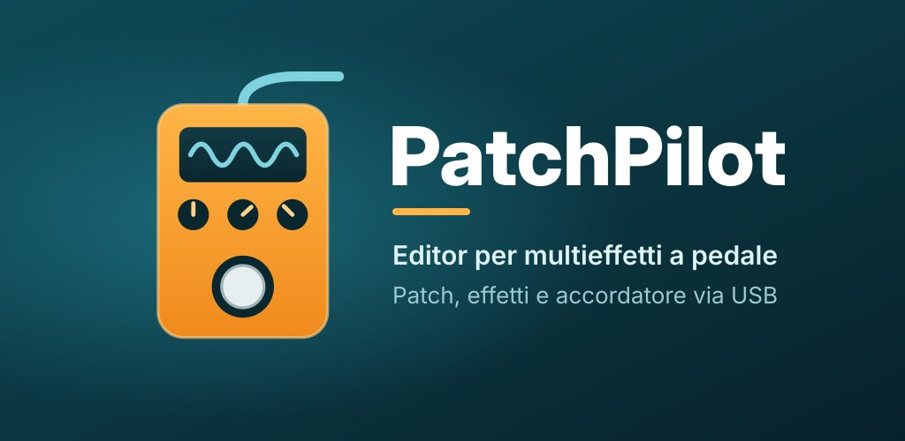

PATCHPILOT
Una sola app per 10 pedali Zoom — su Android, Windows e Linux
PatchPilot collega il tuo Zoom MultiStomp+, G2 FOUR, B2 FOUR, G6, G11 o B6 a un telefono Android o a un computer Windows / Linux con un cavo USB e ti mostra cosa contiene: patch, effetti, parametri e accordatore. Zoom ha un'app diversa per ogni pedale, quasi tutte solo per iPhone: PatchPilot le riunisce in una sola app.

🧪 È una beta. È fatta con cura, e la lettura dei MultiStomp+ coincide con altri progetti provati su pedali veri, ma PatchPilot non è ancora stata provata su tutti i pedali. Ne hai uno? Provala e mandaci il registro.
Pedali supportati
MS-50G+MS-60B+MS-70CDR+MS-80IR+MS-200D+G2 FOURG2X FOURB2 FOURG6G11B6
| Pedale | Collegamento | In questa beta |
|---|---|---|
| MS-50G+ · MS-60B+ · MS-70CDR+ · MS-80IR+ · MS-200D+ | USB | 🧪 riconoscimento, elenco patch, editor, accordatore |
| G2 FOUR / G2X FOUR · B2 FOUR | USB | 🧪 riconoscimento, elenco patch, editor, accordatore |
| G6 · G11 · B6 | USB | 🧪 riconoscimento e registro MIDI; lettura patch più avanti |
| MS-90LP+ | USB | 🔜 in arrivo con la prossima versione |
| G1 FOUR · G1X FOUR · B1 FOUR · B1X FOUR | USB | 🔜 in arrivo con la prossima versione (lettura patch prima sul computer) |
| Qualsiasi pedale MIDI, di qualsiasi marca | USB-MIDI | 🔜 prossima versione, computer: manda il cambio patch per ogni brano della scaletta |
🙋 Il tuo pedale non è in elenco? Diventa tester. Vuoi che PatchPilot supporti il tuo modello, anche di un'altra marca? La prossima versione per Windows e Linux ha la pagina Tester: una registrazione guidata che ascolta soltanto. Al pedale manda solo la richiesta di identità MIDI standard, poi registra quello che il pedale invia mentre cambi patch o giri una manopola; alla fine ci mandi un file di testo. Non è ancora nel download attuale: intanto scrivi a autofonic.mixer@gmail.com con marca e modello.
Cosa puoi fare
Guarda dentro il pedale. L'elenco completo delle patch con i nomi, ogni slot acceso o spento con i suoi parametri, e l'accordatore sullo schermo. Importa i tuoi file .ZD2 per vedere i nomi di effetti e parametri.
Metti al sicuro i tuoi suoni. Salva su file tutte le patch del pedale. Per ogni patch hai una scheda suono leggibile — effetti, acceso/spento, parametri — da stampare, salvare o condividere.
Cerca e confronta. «Dove ho usato quel delay?» Cerca le patch per effetto e confrontane due per vedere solo le differenze.
Scaletta e modalità palco. Metti in ordine i brani e scegli la patch per ognuno — una patch per pedale se ne usi più di uno. Sul palco, uno schermo scuro a caratteri grandi ti dice quale patch selezionare e cosa viene dopo.
Il tuo pedale è al sicuro
PatchPilot legge soltanto. Non scrive, non salva e non cancella nulla nella memoria del pedale: quei comandi sono bloccati nel codice. Backup, schede suono e scalette sono file sul tuo telefono o computer. Il cambio patch dall'app e la modifica dei parametri arriveranno solo dopo le prove sui pedali reali.
Versione completa: 4,99 €, una volta sola
Oggi tutte le funzioni sono gratuite, perché PatchPilot è in beta. Più avanti l'esportazione dei backup su file, le schede suono, la ricerca, il confronto, la scaletta oltre i 3 brani e la modalità palco faranno parte della versione completa: 4,99 €, una volta sola, valida per sempre su quel telefono o computer. Riconoscimento del pedale, elenco patch, editor, accordatore e scaletta di 3 brani restano gratuiti. Se la compri adesso sostieni il progetto e hai già il tuo codice quando la versione completa verrà attivata.
- Apri PatchPilot sul computer e vai alla pagina Sostieni ♥. Il codice dispositivo ha la forma
PP-ABCD-EFGH. - Carta, Google Pay o Apple Pay: paga 4,99 € con Stripe, scrivi il codice dispositivo quando viene chiesto e il codice di sblocco appare subito dopo il pagamento.
- PayPal: paga 4,99 €, poi invia l'email a autofonic.mixer@gmail.com: ricevi il codice di sblocco per email, di solito entro un giorno.
Domande frequenti
Esiste un'app Android per Zoom MS-50G+, MS-60B+ o MS-70CDR+?
Le app Handy Guitar Lab di Zoom per i MultiStomp+ sono per iPhone. PatchPilot è un programma per Windows e Linux, con l'app Android in arrivo su Google Play, che legge patch, effetti e parametri di questi pedali via USB. È una beta.
PatchPilot può modificare o salvare le patch?
Non ancora. La beta legge soltanto dal pedale. La modifica dei parametri e il cambio patch arriveranno un passo alla volta, dopo le prove sui pedali reali.
Che cavo serve?
Un cavo USB-C ↔ USB-C, oppure un adattatore OTG con il cavo USB del pedale. I MultiStomp+ di solito hanno bisogno anche dell'alimentatore, perché il telefono può non bastare.
Funziona sul computer?
Sì: Windows 10/11 e Linux, con le stesse funzioni. Java è incluso nel download. Chiudi prima Guitar Lab: la porta MIDI del pedale funziona con un programma alla volta.
Quanto costa?
Gratis durante la beta. La versione completa costa 4,99 €, una volta sola per dispositivo, con carta (Stripe) o PayPal; ricevi un codice di sblocco personale.
PatchPilot è fatta da Zoom?
No. PatchPilot è un progetto indipendente, non affiliato a Zoom Corporation.